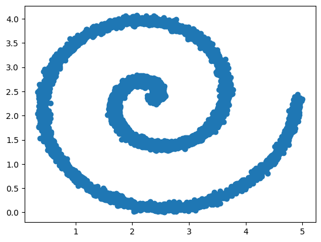
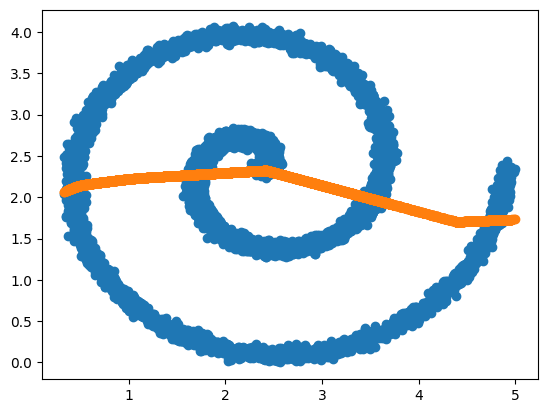
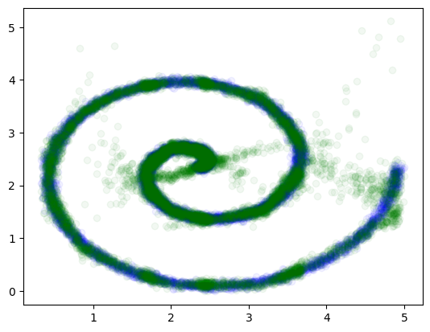
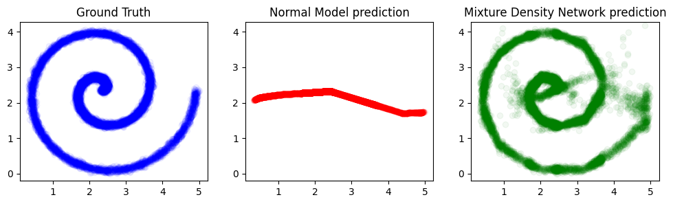

Approximating non-Function Mappings with Mixture Density Networks
Author: lukewood
Date created: 2023/07/15
Last modified: 2023/07/15
Description: Approximate non one to one mapping using mixture density networks.

Approximating NonFunctions
Neural networks are universal function approximators. Key word: function! While powerful function approximators, neural networks are not able to approximate non-functions. One important restriction to remember about functions - they have one input, one output! Neural networks suffer greatly when the training set has multiple values of Y for a single X.
In this guide I'll show you how to approximate the class of non-functions
consisting of mappings from x -> y such that multiple y may exist for a
given x. We'll use a class of neural networks called
"Mixture Density Networks".
I'm going to use the new multibackend Keras V3 to build my Mixture Density networks. Great job to the Keras team on the project - it's awesome to be able to swap frameworks in one line of code.
Some bad news: I use TensorFlow probability in this guide... so it actually works only with TensorFlow and JAX backends.
Anyways, let's start by installing dependencies and sorting out imports:
!pip install -q --upgrade jax tensorflow-probability[jax] keras
import os
os.environ["KERAS_BACKEND"] = "jax"
import numpy as np
import matplotlib.pyplot as plt
import keras
from keras import callbacks, layers, ops
from tensorflow_probability.substrates.jax import distributions as tfd
Using JAX backend
Next, lets generate a noisy spiral that we're going to attempt to approximate. I've defined a few functions below to do this:
def normalize(x):
return (x - np.min(x)) / (np.max(x) - np.min(x))
def create_noisy_spiral(n, jitter_std=0.2, revolutions=2):
angle = np.random.uniform(0, 2 * np.pi * revolutions, [n])
r = angle
x = r * np.cos(angle)
y = r * np.sin(angle)
result = np.stack([x, y], axis=1)
result = result + np.random.normal(scale=jitter_std, size=[n, 2])
result = 5 * normalize(result)
return result
Next, lets invoke this function many times to construct a sample dataset:
xy = create_noisy_spiral(10000)
x, y = xy[:, 0:1], xy[:, 1:]
plt.scatter(x, y)
plt.show()

As you can see, there's multiple possible values for Y with respect to a given X. Normal neural networks will simply learn the mean of these points with respect to geometric space.
We can quickly show this with a simple linear model:
N_HIDDEN = 128
model = keras.Sequential(
[
layers.Dense(N_HIDDEN, activation="relu"),
layers.Dense(N_HIDDEN, activation="relu"),
layers.Dense(1),
]
)
Let's use mean squared error as well as the adam optimizer. These tend to be reasonable prototyping choices:
model.compile(optimizer="adam", loss="mse")
We can fit this model quite easy
model.fit(
x,
y,
epochs=300,
batch_size=128,
validation_split=0.15,
callbacks=[callbacks.EarlyStopping(monitor="val_loss", patience=10)],
)
Epoch 1/300
67/67 ━━━━━━━━━━━━━━━━━━━━ 3s 8ms/step - loss: 2.6971 - val_loss: 1.6366
Epoch 2/300
67/67 ━━━━━━━━━━━━━━━━━━━━ 0s 2ms/step - loss: 1.5672 - val_loss: 1.2341
Epoch 3/300
67/67 ━━━━━━━━━━━━━━━━━━━━ 0s 2ms/step - loss: 1.1751 - val_loss: 1.0113
Epoch 4/300
67/67 ━━━━━━━━━━━━━━━━━━━━ 0s 2ms/step - loss: 1.0322 - val_loss: 1.0108
Epoch 5/300
67/67 ━━━━━━━━━━━━━━━━━━━━ 0s 2ms/step - loss: 1.0625 - val_loss: 1.0212
Epoch 6/300
67/67 ━━━━━━━━━━━━━━━━━━━━ 0s 2ms/step - loss: 1.0290 - val_loss: 1.0022
Epoch 7/300
67/67 ━━━━━━━━━━━━━━━━━━━━ 0s 2ms/step - loss: 1.0469 - val_loss: 1.0033
Epoch 8/300
67/67 ━━━━━━━━━━━━━━━━━━━━ 0s 2ms/step - loss: 1.0247 - val_loss: 1.0011
Epoch 9/300
67/67 ━━━━━━━━━━━━━━━━━━━━ 0s 2ms/step - loss: 1.0313 - val_loss: 0.9997
Epoch 10/300
67/67 ━━━━━━━━━━━━━━━━━━━━ 0s 2ms/step - loss: 1.0252 - val_loss: 0.9995
Epoch 11/300
67/67 ━━━━━━━━━━━━━━━━━━━━ 0s 2ms/step - loss: 1.0369 - val_loss: 1.0015
Epoch 12/300
67/67 ━━━━━━━━━━━━━━━━━━━━ 0s 2ms/step - loss: 1.0203 - val_loss: 0.9958
Epoch 13/300
67/67 ━━━━━━━━━━━━━━━━━━━━ 0s 2ms/step - loss: 1.0305 - val_loss: 0.9960
Epoch 14/300
67/67 ━━━━━━━━━━━━━━━━━━━━ 0s 2ms/step - loss: 1.0283 - val_loss: 1.0081
Epoch 15/300
67/67 ━━━━━━━━━━━━━━━━━━━━ 0s 2ms/step - loss: 1.0331 - val_loss: 0.9943
Epoch 16/300
67/67 ━━━━━━━━━━━━━━━━━━━━ 0s 3ms/step - loss: 1.0244 - val_loss: 1.0021
Epoch 17/300
67/67 ━━━━━━━━━━━━━━━━━━━━ 0s 2ms/step - loss: 1.0496 - val_loss: 1.0077
Epoch 18/300
67/67 ━━━━━━━━━━━━━━━━━━━━ 0s 2ms/step - loss: 1.0367 - val_loss: 0.9940
Epoch 19/300
67/67 ━━━━━━━━━━━━━━━━━━━━ 0s 2ms/step - loss: 1.0201 - val_loss: 0.9927
Epoch 20/300
67/67 ━━━━━━━━━━━━━━━━━━━━ 0s 2ms/step - loss: 1.0501 - val_loss: 1.0133
Epoch 21/300
67/67 ━━━━━━━━━━━━━━━━━━━━ 0s 2ms/step - loss: 1.0098 - val_loss: 0.9980
Epoch 22/300
67/67 ━━━━━━━━━━━━━━━━━━━━ 0s 2ms/step - loss: 1.0195 - val_loss: 0.9907
Epoch 23/300
67/67 ━━━━━━━━━━━━━━━━━━━━ 0s 2ms/step - loss: 1.0196 - val_loss: 0.9899
Epoch 24/300
67/67 ━━━━━━━━━━━━━━━━━━━━ 0s 2ms/step - loss: 1.0170 - val_loss: 1.0033
Epoch 25/300
67/67 ━━━━━━━━━━━━━━━━━━━━ 0s 2ms/step - loss: 1.0169 - val_loss: 0.9963
Epoch 26/300
67/67 ━━━━━━━━━━━━━━━━━━━━ 0s 2ms/step - loss: 1.0141 - val_loss: 0.9895
Epoch 27/300
67/67 ━━━━━━━━━━━━━━━━━━━━ 0s 2ms/step - loss: 1.0367 - val_loss: 0.9916
Epoch 28/300
67/67 ━━━━━━━━━━━━━━━━━━━━ 0s 2ms/step - loss: 1.0301 - val_loss: 0.9991
Epoch 29/300
67/67 ━━━━━━━━━━━━━━━━━━━━ 0s 2ms/step - loss: 1.0097 - val_loss: 1.0004
Epoch 30/300
67/67 ━━━━━━━━━━━━━━━━━━━━ 0s 2ms/step - loss: 1.0415 - val_loss: 1.0062
Epoch 31/300
67/67 ━━━━━━━━━━━━━━━━━━━━ 0s 2ms/step - loss: 1.0186 - val_loss: 0.9888
Epoch 32/300
67/67 ━━━━━━━━━━━━━━━━━━━━ 0s 2ms/step - loss: 1.0230 - val_loss: 0.9910
Epoch 33/300
67/67 ━━━━━━━━━━━━━━━━━━━━ 0s 2ms/step - loss: 1.0217 - val_loss: 0.9910
Epoch 34/300
67/67 ━━━━━━━━━━━━━━━━━━━━ 0s 2ms/step - loss: 1.0180 - val_loss: 0.9945
Epoch 35/300
67/67 ━━━━━━━━━━━━━━━━━━━━ 0s 2ms/step - loss: 1.0329 - val_loss: 0.9963
Epoch 36/300
67/67 ━━━━━━━━━━━━━━━━━━━━ 0s 2ms/step - loss: 1.0190 - val_loss: 0.9912
Epoch 37/300
67/67 ━━━━━━━━━━━━━━━━━━━━ 0s 2ms/step - loss: 1.0341 - val_loss: 0.9894
Epoch 38/300
67/67 ━━━━━━━━━━━━━━━━━━━━ 0s 2ms/step - loss: 1.0100 - val_loss: 0.9920
Epoch 39/300
67/67 ━━━━━━━━━━━━━━━━━━━━ 0s 2ms/step - loss: 1.0097 - val_loss: 0.9899
Epoch 40/300
67/67 ━━━━━━━━━━━━━━━━━━━━ 0s 2ms/step - loss: 1.0216 - val_loss: 0.9948
Epoch 41/300
67/67 ━━━━━━━━━━━━━━━━━━━━ 0s 2ms/step - loss: 1.0115 - val_loss: 0.9923
<keras_core.src.callbacks.history.History at 0x12e0b4dd0>
And let's check out the result:
y_pred = model.predict(x)
313/313 ━━━━━━━━━━━━━━━━━━━━ 0s 851us/step
As expected, the model learns the geometric mean of all points in y for a
given x.
plt.scatter(x, y)
plt.scatter(x, y_pred)
plt.show()

Mixture Density Networks
Mixture Density networks can alleviate this problem. A Mixture density is a class of complicated densities expressible in terms of simpler densities. They are effectively the sum of a ton of probability distributions. Mixture Density networks learn to parameterize a mixture density distribution based on a given training set.
As a practitioner, all you need to know, is that Mixture Density Networks solve
the problem of multiple values of Y for a given X.
I'm hoping to add a tool to your kit- but I'm not going to formally explain the
derivation of Mixture Density networks in this guide.
The most important thing to know is that a Mixture Density network learns to
parameterize a mixture density distribution.
This is done by computing a special loss with respect to both the provided
y_i label as well as the predicted distribution for the corresponding x_i.
This loss function operates by computing the probability that y_i would be
drawn from the predicted mixture distribution.
Let's implement a Mixture density network.
Below, a ton of helper functions are defined based on an old Keras library
Keras Mixture Density Network Layer.
I've adapted the code for use with Keras core.
Lets start writing a Mixture Density Network! First, we need a special activation function: ELU plus a tiny epsilon. This helps prevent ELU from outputting 0 which causes NaNs in Mixture Density Network loss evaluation.
def elu_plus_one_plus_epsilon(x):
return keras.activations.elu(x) + 1 + keras.backend.epsilon()
Next, lets actually define a MixtureDensity layer that outputs all values needed to sample from the learned mixture distribution:
class MixtureDensityOutput(layers.Layer):
def __init__(self, output_dimension, num_mixtures, **kwargs):
super().__init__(**kwargs)
self.output_dim = output_dimension
self.num_mix = num_mixtures
self.mdn_mus = layers.Dense(
self.num_mix * self.output_dim, name="mdn_mus"
) # mix*output vals, no activation
self.mdn_sigmas = layers.Dense(
self.num_mix * self.output_dim,
activation=elu_plus_one_plus_epsilon,
name="mdn_sigmas",
) # mix*output vals exp activation
self.mdn_pi = layers.Dense(self.num_mix, name="mdn_pi") # mix vals, logits
def build(self, input_shape):
self.mdn_mus.build(input_shape)
self.mdn_sigmas.build(input_shape)
self.mdn_pi.build(input_shape)
super().build(input_shape)
@property
def trainable_weights(self):
return (
self.mdn_mus.trainable_weights
+ self.mdn_sigmas.trainable_weights
+ self.mdn_pi.trainable_weights
)
@property
def non_trainable_weights(self):
return (
self.mdn_mus.non_trainable_weights
+ self.mdn_sigmas.non_trainable_weights
+ self.mdn_pi.non_trainable_weights
)
def call(self, x, mask=None):
return layers.concatenate(
[self.mdn_mus(x), self.mdn_sigmas(x), self.mdn_pi(x)], name="mdn_outputs"
)
Lets construct an Mixture Density Network using our new layer:
OUTPUT_DIMS = 1
N_MIXES = 20
mdn_network = keras.Sequential(
[
layers.Dense(N_HIDDEN, activation="relu"),
layers.Dense(N_HIDDEN, activation="relu"),
MixtureDensityOutput(OUTPUT_DIMS, N_MIXES),
]
)
Next, let's implement a custom loss function to train the Mixture Density Network layer based on the true values and our expected outputs:
def get_mixture_loss_func(output_dim, num_mixes):
def mdn_loss_func(y_true, y_pred):
# Reshape inputs in case this is used in a TimeDistributed layer
y_pred = ops.reshape(y_pred, [-1, (2 * num_mixes * output_dim) + num_mixes])
y_true = ops.reshape(y_true, [-1, output_dim])
# Split the inputs into parameters
out_mu, out_sigma, out_pi = ops.split(y_pred, 3, axis=-1)
# Construct the mixture models
cat = tfd.Categorical(logits=out_pi)
mus = ops.split(out_mu, num_mixes, axis=1)
sigs = ops.split(out_sigma, num_mixes, axis=1)
coll = [
tfd.MultivariateNormalDiag(loc=loc, scale_diag=scale)
for loc, scale in zip(mus, sigs)
]
mixture = tfd.Mixture(cat=cat, components=coll)
loss = mixture.log_prob(y_true)
loss = ops.negative(loss)
loss = ops.mean(loss)
return loss
return mdn_loss_func
mdn_network.compile(loss=get_mixture_loss_func(OUTPUT_DIMS, N_MIXES), optimizer="adam")
Finally, we can call model.fit() like any other Keras model.
mdn_network.fit(
x,
y,
epochs=300,
batch_size=128,
validation_split=0.15,
callbacks=[
callbacks.EarlyStopping(monitor="loss", patience=10, restore_best_weights=True),
callbacks.ReduceLROnPlateau(monitor="loss", patience=5),
],
)
Epoch 1/300
67/67 ━━━━━━━━━━━━━━━━━━━━ 20s 89ms/step - loss: 2.5088 - val_loss: 1.6384 - learning_rate: 0.0010
Epoch 2/300
67/67 ━━━━━━━━━━━━━━━━━━━━ 0s 2ms/step - loss: 1.5954 - val_loss: 1.4872 - learning_rate: 0.0010
Epoch 3/300
67/67 ━━━━━━━━━━━━━━━━━━━━ 0s 2ms/step - loss: 1.4818 - val_loss: 1.4026 - learning_rate: 0.0010
Epoch 4/300
67/67 ━━━━━━━━━━━━━━━━━━━━ 0s 2ms/step - loss: 1.3818 - val_loss: 1.3327 - learning_rate: 0.0010
Epoch 5/300
67/67 ━━━━━━━━━━━━━━━━━━━━ 0s 2ms/step - loss: 1.3478 - val_loss: 1.3034 - learning_rate: 0.0010
Epoch 6/300
67/67 ━━━━━━━━━━━━━━━━━━━━ 0s 3ms/step - loss: 1.3045 - val_loss: 1.2684 - learning_rate: 0.0010
Epoch 7/300
67/67 ━━━━━━━━━━━━━━━━━━━━ 0s 3ms/step - loss: 1.2836 - val_loss: 1.2381 - learning_rate: 0.0010
Epoch 8/300
67/67 ━━━━━━━━━━━━━━━━━━━━ 0s 3ms/step - loss: 1.2582 - val_loss: 1.2047 - learning_rate: 0.0010
Epoch 9/300
67/67 ━━━━━━━━━━━━━━━━━━━━ 0s 2ms/step - loss: 1.2212 - val_loss: 1.1915 - learning_rate: 0.0010
Epoch 10/300
67/67 ━━━━━━━━━━━━━━━━━━━━ 0s 2ms/step - loss: 1.1907 - val_loss: 1.1903 - learning_rate: 0.0010
Epoch 11/300
67/67 ━━━━━━━━━━━━━━━━━━━━ 0s 2ms/step - loss: 1.1456 - val_loss: 1.0221 - learning_rate: 0.0010
Epoch 12/300
67/67 ━━━━━━━━━━━━━━━━━━━━ 0s 2ms/step - loss: 1.0075 - val_loss: 0.9356 - learning_rate: 0.0010
Epoch 13/300
67/67 ━━━━━━━━━━━━━━━━━━━━ 0s 2ms/step - loss: 0.9413 - val_loss: 0.8409 - learning_rate: 0.0010
Epoch 14/300
67/67 ━━━━━━━━━━━━━━━━━━━━ 0s 3ms/step - loss: 0.8646 - val_loss: 0.8717 - learning_rate: 0.0010
Epoch 15/300
67/67 ━━━━━━━━━━━━━━━━━━━━ 0s 3ms/step - loss: 0.8053 - val_loss: 0.8080 - learning_rate: 0.0010
Epoch 16/300
67/67 ━━━━━━━━━━━━━━━━━━━━ 0s 2ms/step - loss: 0.7568 - val_loss: 0.6381 - learning_rate: 0.0010
Epoch 17/300
67/67 ━━━━━━━━━━━━━━━━━━━━ 0s 2ms/step - loss: 0.6638 - val_loss: 0.6175 - learning_rate: 0.0010
Epoch 18/300
67/67 ━━━━━━━━━━━━━━━━━━━━ 0s 2ms/step - loss: 0.5893 - val_loss: 0.5387 - learning_rate: 0.0010
Epoch 19/300
67/67 ━━━━━━━━━━━━━━━━━━━━ 0s 2ms/step - loss: 0.5835 - val_loss: 0.5449 - learning_rate: 0.0010
Epoch 20/300
67/67 ━━━━━━━━━━━━━━━━━━━━ 0s 4ms/step - loss: 0.5137 - val_loss: 0.4536 - learning_rate: 0.0010
Epoch 21/300
67/67 ━━━━━━━━━━━━━━━━━━━━ 0s 3ms/step - loss: 0.4808 - val_loss: 0.4779 - learning_rate: 0.0010
Epoch 22/300
67/67 ━━━━━━━━━━━━━━━━━━━━ 0s 2ms/step - loss: 0.4592 - val_loss: 0.4359 - learning_rate: 0.0010
Epoch 23/300
67/67 ━━━━━━━━━━━━━━━━━━━━ 0s 2ms/step - loss: 0.4303 - val_loss: 0.4768 - learning_rate: 0.0010
Epoch 24/300
67/67 ━━━━━━━━━━━━━━━━━━━━ 0s 2ms/step - loss: 0.4505 - val_loss: 0.4084 - learning_rate: 0.0010
Epoch 25/300
67/67 ━━━━━━━━━━━━━━━━━━━━ 0s 2ms/step - loss: 0.4033 - val_loss: 0.3484 - learning_rate: 0.0010
Epoch 26/300
67/67 ━━━━━━━━━━━━━━━━━━━━ 0s 2ms/step - loss: 0.3696 - val_loss: 0.4844 - learning_rate: 0.0010
Epoch 27/300
67/67 ━━━━━━━━━━━━━━━━━━━━ 0s 2ms/step - loss: 0.3868 - val_loss: 0.3406 - learning_rate: 0.0010
Epoch 28/300
67/67 ━━━━━━━━━━━━━━━━━━━━ 0s 2ms/step - loss: 0.3214 - val_loss: 0.2739 - learning_rate: 0.0010
Epoch 29/300
67/67 ━━━━━━━━━━━━━━━━━━━━ 0s 2ms/step - loss: 0.3154 - val_loss: 0.3286 - learning_rate: 0.0010
Epoch 30/300
67/67 ━━━━━━━━━━━━━━━━━━━━ 0s 2ms/step - loss: 0.2930 - val_loss: 0.2263 - learning_rate: 0.0010
Epoch 31/300
67/67 ━━━━━━━━━━━━━━━━━━━━ 0s 2ms/step - loss: 0.2946 - val_loss: 0.2927 - learning_rate: 0.0010
Epoch 32/300
67/67 ━━━━━━━━━━━━━━━━━━━━ 0s 2ms/step - loss: 0.2739 - val_loss: 0.2026 - learning_rate: 0.0010
Epoch 33/300
67/67 ━━━━━━━━━━━━━━━━━━━━ 0s 2ms/step - loss: 0.2454 - val_loss: 0.2451 - learning_rate: 0.0010
Epoch 34/300
67/67 ━━━━━━━━━━━━━━━━━━━━ 0s 2ms/step - loss: 0.2146 - val_loss: 0.1722 - learning_rate: 0.0010
Epoch 35/300
67/67 ━━━━━━━━━━━━━━━━━━━━ 0s 2ms/step - loss: 0.2041 - val_loss: 0.2774 - learning_rate: 0.0010
Epoch 36/300
67/67 ━━━━━━━━━━━━━━━━━━━━ 0s 2ms/step - loss: 0.2020 - val_loss: 0.1257 - learning_rate: 0.0010
Epoch 37/300
67/67 ━━━━━━━━━━━━━━━━━━━━ 0s 2ms/step - loss: 0.1614 - val_loss: 0.1128 - learning_rate: 0.0010
Epoch 38/300
67/67 ━━━━━━━━━━━━━━━━━━━━ 0s 2ms/step - loss: 0.1676 - val_loss: 0.1908 - learning_rate: 0.0010
Epoch 39/300
67/67 ━━━━━━━━━━━━━━━━━━━━ 0s 3ms/step - loss: 0.1511 - val_loss: 0.1045 - learning_rate: 0.0010
Epoch 40/300
67/67 ━━━━━━━━━━━━━━━━━━━━ 0s 3ms/step - loss: 0.1061 - val_loss: 0.1321 - learning_rate: 0.0010
Epoch 41/300
67/67 ━━━━━━━━━━━━━━━━━━━━ 0s 2ms/step - loss: 0.1170 - val_loss: 0.0879 - learning_rate: 0.0010
Epoch 42/300
67/67 ━━━━━━━━━━━━━━━━━━━━ 0s 2ms/step - loss: 0.1045 - val_loss: 0.0307 - learning_rate: 0.0010
Epoch 43/300
67/67 ━━━━━━━━━━━━━━━━━━━━ 0s 2ms/step - loss: 0.1066 - val_loss: 0.0637 - learning_rate: 0.0010
Epoch 44/300
67/67 ━━━━━━━━━━━━━━━━━━━━ 0s 2ms/step - loss: 0.0960 - val_loss: 0.0304 - learning_rate: 0.0010
Epoch 45/300
67/67 ━━━━━━━━━━━━━━━━━━━━ 0s 2ms/step - loss: 0.0747 - val_loss: 0.0211 - learning_rate: 0.0010
Epoch 46/300
67/67 ━━━━━━━━━━━━━━━━━━━━ 0s 2ms/step - loss: 0.0733 - val_loss: -0.0155 - learning_rate: 0.0010
Epoch 47/300
67/67 ━━━━━━━━━━━━━━━━━━━━ 0s 2ms/step - loss: 0.0339 - val_loss: 0.0079 - learning_rate: 0.0010
Epoch 48/300
67/67 ━━━━━━━━━━━━━━━━━━━━ 0s 2ms/step - loss: 0.0597 - val_loss: 0.0223 - learning_rate: 0.0010
Epoch 49/300
67/67 ━━━━━━━━━━━━━━━━━━━━ 0s 2ms/step - loss: 0.0370 - val_loss: 0.0549 - learning_rate: 0.0010
Epoch 50/300
67/67 ━━━━━━━━━━━━━━━━━━━━ 0s 2ms/step - loss: 0.0343 - val_loss: 0.0031 - learning_rate: 0.0010
Epoch 51/300
67/67 ━━━━━━━━━━━━━━━━━━━━ 0s 2ms/step - loss: 0.0132 - val_loss: -0.0304 - learning_rate: 0.0010
Epoch 52/300
67/67 ━━━━━━━━━━━━━━━━━━━━ 0s 2ms/step - loss: 0.0326 - val_loss: 0.0584 - learning_rate: 0.0010
Epoch 53/300
67/67 ━━━━━━━━━━━━━━━━━━━━ 0s 2ms/step - loss: 0.0512 - val_loss: -0.0166 - learning_rate: 0.0010
Epoch 54/300
67/67 ━━━━━━━━━━━━━━━━━━━━ 0s 2ms/step - loss: 0.0210 - val_loss: -0.0433 - learning_rate: 0.0010
Epoch 55/300
67/67 ━━━━━━━━━━━━━━━━━━━━ 0s 2ms/step - loss: 0.0261 - val_loss: 0.0317 - learning_rate: 0.0010
Epoch 56/300
67/67 ━━━━━━━━━━━━━━━━━━━━ 0s 2ms/step - loss: 0.0185 - val_loss: -0.0210 - learning_rate: 0.0010
Epoch 57/300
67/67 ━━━━━━━━━━━━━━━━━━━━ 0s 2ms/step - loss: 0.0021 - val_loss: -0.0218 - learning_rate: 0.0010
Epoch 58/300
67/67 ━━━━━━━━━━━━━━━━━━━━ 0s 2ms/step - loss: 0.0100 - val_loss: -0.0488 - learning_rate: 0.0010
Epoch 59/300
67/67 ━━━━━━━━━━━━━━━━━━━━ 0s 2ms/step - loss: -0.0126 - val_loss: -0.0504 - learning_rate: 0.0010
Epoch 60/300
67/67 ━━━━━━━━━━━━━━━━━━━━ 0s 2ms/step - loss: -0.0278 - val_loss: -0.0622 - learning_rate: 0.0010
Epoch 61/300
67/67 ━━━━━━━━━━━━━━━━━━━━ 0s 2ms/step - loss: -0.0180 - val_loss: -0.0756 - learning_rate: 0.0010
Epoch 62/300
67/67 ━━━━━━━━━━━━━━━━━━━━ 0s 3ms/step - loss: -0.0198 - val_loss: -0.0427 - learning_rate: 0.0010
Epoch 63/300
67/67 ━━━━━━━━━━━━━━━━━━━━ 0s 2ms/step - loss: -0.0129 - val_loss: -0.0483 - learning_rate: 0.0010
Epoch 64/300
67/67 ━━━━━━━━━━━━━━━━━━━━ 0s 2ms/step - loss: -0.0221 - val_loss: -0.0379 - learning_rate: 0.0010
Epoch 65/300
67/67 ━━━━━━━━━━━━━━━━━━━━ 0s 3ms/step - loss: -0.0177 - val_loss: -0.0626 - learning_rate: 0.0010
Epoch 66/300
67/67 ━━━━━━━━━━━━━━━━━━━━ 0s 2ms/step - loss: -0.0045 - val_loss: -0.0148 - learning_rate: 0.0010
Epoch 67/300
67/67 ━━━━━━━━━━━━━━━━━━━━ 0s 2ms/step - loss: -0.0045 - val_loss: -0.0570 - learning_rate: 0.0010
Epoch 68/300
67/67 ━━━━━━━━━━━━━━━━━━━━ 0s 2ms/step - loss: -0.0304 - val_loss: -0.0062 - learning_rate: 0.0010
Epoch 69/300
67/67 ━━━━━━━━━━━━━━━━━━━━ 0s 2ms/step - loss: 0.0053 - val_loss: -0.0553 - learning_rate: 0.0010
Epoch 70/300
67/67 ━━━━━━━━━━━━━━━━━━━━ 0s 2ms/step - loss: -0.0364 - val_loss: -0.1112 - learning_rate: 0.0010
Epoch 71/300
67/67 ━━━━━━━━━━━━━━━━━━━━ 0s 2ms/step - loss: -0.0017 - val_loss: -0.0865 - learning_rate: 0.0010
Epoch 72/300
67/67 ━━━━━━━━━━━━━━━━━━━━ 0s 2ms/step - loss: -0.0082 - val_loss: -0.1180 - learning_rate: 0.0010
Epoch 73/300
67/67 ━━━━━━━━━━━━━━━━━━━━ 0s 2ms/step - loss: -0.0501 - val_loss: -0.1028 - learning_rate: 0.0010
Epoch 74/300
67/67 ━━━━━━━━━━━━━━━━━━━━ 0s 2ms/step - loss: -0.0452 - val_loss: -0.0381 - learning_rate: 0.0010
Epoch 75/300
67/67 ━━━━━━━━━━━━━━━━━━━━ 0s 2ms/step - loss: -0.0397 - val_loss: -0.0517 - learning_rate: 0.0010
Epoch 76/300
67/67 ━━━━━━━━━━━━━━━━━━━━ 0s 2ms/step - loss: -0.0317 - val_loss: -0.1144 - learning_rate: 0.0010
Epoch 77/300
67/67 ━━━━━━━━━━━━━━━━━━━━ 0s 2ms/step - loss: -0.0400 - val_loss: -0.1283 - learning_rate: 0.0010
Epoch 78/300
67/67 ━━━━━━━━━━━━━━━━━━━━ 0s 2ms/step - loss: -0.0756 - val_loss: -0.0749 - learning_rate: 0.0010
Epoch 79/300
67/67 ━━━━━━━━━━━━━━━━━━━━ 0s 2ms/step - loss: -0.0459 - val_loss: -0.1229 - learning_rate: 0.0010
Epoch 80/300
67/67 ━━━━━━━━━━━━━━━━━━━━ 0s 2ms/step - loss: -0.0485 - val_loss: -0.0896 - learning_rate: 0.0010
Epoch 81/300
67/67 ━━━━━━━━━━━━━━━━━━━━ 0s 3ms/step - loss: -0.0351 - val_loss: -0.1037 - learning_rate: 0.0010
Epoch 82/300
67/67 ━━━━━━━━━━━━━━━━━━━━ 0s 2ms/step - loss: -0.0617 - val_loss: -0.0949 - learning_rate: 0.0010
Epoch 83/300
67/67 ━━━━━━━━━━━━━━━━━━━━ 0s 2ms/step - loss: -0.0614 - val_loss: -0.1044 - learning_rate: 0.0010
Epoch 84/300
67/67 ━━━━━━━━━━━━━━━━━━━━ 0s 2ms/step - loss: -0.0650 - val_loss: -0.1128 - learning_rate: 0.0010
Epoch 85/300
67/67 ━━━━━━━━━━━━━━━━━━━━ 0s 2ms/step - loss: -0.0710 - val_loss: -0.1236 - learning_rate: 0.0010
Epoch 86/300
67/67 ━━━━━━━━━━━━━━━━━━━━ 0s 2ms/step - loss: -0.0504 - val_loss: -0.0149 - learning_rate: 0.0010
Epoch 87/300
67/67 ━━━━━━━━━━━━━━━━━━━━ 0s 2ms/step - loss: -0.0561 - val_loss: -0.1095 - learning_rate: 0.0010
Epoch 88/300
67/67 ━━━━━━━━━━━━━━━━━━━━ 0s 2ms/step - loss: -0.0527 - val_loss: -0.0929 - learning_rate: 0.0010
Epoch 89/300
67/67 ━━━━━━━━━━━━━━━━━━━━ 0s 2ms/step - loss: -0.0704 - val_loss: -0.1062 - learning_rate: 0.0010
Epoch 90/300
67/67 ━━━━━━━━━━━━━━━━━━━━ 0s 2ms/step - loss: -0.0386 - val_loss: -0.1433 - learning_rate: 0.0010
Epoch 91/300
67/67 ━━━━━━━━━━━━━━━━━━━━ 0s 2ms/step - loss: -0.1129 - val_loss: -0.1698 - learning_rate: 1.0000e-04
Epoch 92/300
67/67 ━━━━━━━━━━━━━━━━━━━━ 0s 2ms/step - loss: -0.1210 - val_loss: -0.1696 - learning_rate: 1.0000e-04
Epoch 93/300
67/67 ━━━━━━━━━━━━━━━━━━━━ 0s 2ms/step - loss: -0.1315 - val_loss: -0.1663 - learning_rate: 1.0000e-04
Epoch 94/300
67/67 ━━━━━━━━━━━━━━━━━━━━ 0s 2ms/step - loss: -0.1207 - val_loss: -0.1696 - learning_rate: 1.0000e-04
Epoch 95/300
67/67 ━━━━━━━━━━━━━━━━━━━━ 0s 2ms/step - loss: -0.1208 - val_loss: -0.1606 - learning_rate: 1.0000e-04
Epoch 96/300
67/67 ━━━━━━━━━━━━━━━━━━━━ 0s 2ms/step - loss: -0.1157 - val_loss: -0.1728 - learning_rate: 1.0000e-04
Epoch 97/300
67/67 ━━━━━━━━━━━━━━━━━━━━ 0s 2ms/step - loss: -0.1367 - val_loss: -0.1691 - learning_rate: 1.0000e-04
Epoch 98/300
67/67 ━━━━━━━━━━━━━━━━━━━━ 0s 2ms/step - loss: -0.1237 - val_loss: -0.1740 - learning_rate: 1.0000e-04
Epoch 99/300
67/67 ━━━━━━━━━━━━━━━━━━━━ 0s 2ms/step - loss: -0.1271 - val_loss: -0.1593 - learning_rate: 1.0000e-04
Epoch 100/300
67/67 ━━━━━━━━━━━━━━━━━━━━ 0s 2ms/step - loss: -0.1358 - val_loss: -0.1738 - learning_rate: 1.0000e-04
Epoch 101/300
67/67 ━━━━━━━━━━━━━━━━━━━━ 0s 2ms/step - loss: -0.1260 - val_loss: -0.1669 - learning_rate: 1.0000e-04
Epoch 102/300
67/67 ━━━━━━━━━━━━━━━━━━━━ 0s 2ms/step - loss: -0.1184 - val_loss: -0.1660 - learning_rate: 1.0000e-04
Epoch 103/300
67/67 ━━━━━━━━━━━━━━━━━━━━ 0s 2ms/step - loss: -0.1221 - val_loss: -0.1740 - learning_rate: 1.0000e-04
Epoch 104/300
67/67 ━━━━━━━━━━━━━━━━━━━━ 0s 2ms/step - loss: -0.1207 - val_loss: -0.1498 - learning_rate: 1.0000e-04
Epoch 105/300
67/67 ━━━━━━━━━━━━━━━━━━━━ 0s 2ms/step - loss: -0.1210 - val_loss: -0.1695 - learning_rate: 1.0000e-04
Epoch 106/300
67/67 ━━━━━━━━━━━━━━━━━━━━ 0s 2ms/step - loss: -0.1264 - val_loss: -0.1477 - learning_rate: 1.0000e-04
Epoch 107/300
67/67 ━━━━━━━━━━━━━━━━━━━━ 0s 2ms/step - loss: -0.1217 - val_loss: -0.1717 - learning_rate: 1.0000e-04
Epoch 108/300
67/67 ━━━━━━━━━━━━━━━━━━━━ 0s 2ms/step - loss: -0.1182 - val_loss: -0.1748 - learning_rate: 1.0000e-05
Epoch 109/300
67/67 ━━━━━━━━━━━━━━━━━━━━ 0s 2ms/step - loss: -0.1394 - val_loss: -0.1757 - learning_rate: 1.0000e-05
Epoch 110/300
67/67 ━━━━━━━━━━━━━━━━━━━━ 0s 2ms/step - loss: -0.1363 - val_loss: -0.1762 - learning_rate: 1.0000e-05
Epoch 111/300
67/67 ━━━━━━━━━━━━━━━━━━━━ 0s 2ms/step - loss: -0.1292 - val_loss: -0.1765 - learning_rate: 1.0000e-05
Epoch 112/300
67/67 ━━━━━━━━━━━━━━━━━━━━ 0s 2ms/step - loss: -0.1330 - val_loss: -0.1737 - learning_rate: 1.0000e-05
Epoch 113/300
67/67 ━━━━━━━━━━━━━━━━━━━━ 0s 2ms/step - loss: -0.1341 - val_loss: -0.1769 - learning_rate: 1.0000e-05
Epoch 114/300
67/67 ━━━━━━━━━━━━━━━━━━━━ 0s 2ms/step - loss: -0.1318 - val_loss: -0.1771 - learning_rate: 1.0000e-05
Epoch 115/300
67/67 ━━━━━━━━━━━━━━━━━━━━ 0s 2ms/step - loss: -0.1285 - val_loss: -0.1756 - learning_rate: 1.0000e-05
Epoch 116/300
67/67 ━━━━━━━━━━━━━━━━━━━━ 0s 2ms/step - loss: -0.1211 - val_loss: -0.1764 - learning_rate: 1.0000e-05
Epoch 117/300
67/67 ━━━━━━━━━━━━━━━━━━━━ 0s 2ms/step - loss: -0.1434 - val_loss: -0.1755 - learning_rate: 1.0000e-05
Epoch 118/300
67/67 ━━━━━━━━━━━━━━━━━━━━ 1s 2ms/step - loss: -0.1375 - val_loss: -0.1757 - learning_rate: 1.0000e-05
Epoch 119/300
67/67 ━━━━━━━━━━━━━━━━━━━━ 0s 2ms/step - loss: -0.1407 - val_loss: -0.1740 - learning_rate: 1.0000e-05
Epoch 120/300
67/67 ━━━━━━━━━━━━━━━━━━━━ 0s 2ms/step - loss: -0.1406 - val_loss: -0.1754 - learning_rate: 1.0000e-06
Epoch 121/300
67/67 ━━━━━━━━━━━━━━━━━━━━ 0s 2ms/step - loss: -0.1258 - val_loss: -0.1761 - learning_rate: 1.0000e-06
Epoch 122/300
67/67 ━━━━━━━━━━━━━━━━━━━━ 0s 2ms/step - loss: -0.1384 - val_loss: -0.1762 - learning_rate: 1.0000e-06
Epoch 123/300
67/67 ━━━━━━━━━━━━━━━━━━━━ 0s 2ms/step - loss: -0.1522 - val_loss: -0.1764 - learning_rate: 1.0000e-06
Epoch 124/300
67/67 ━━━━━━━━━━━━━━━━━━━━ 0s 2ms/step - loss: -0.1310 - val_loss: -0.1763 - learning_rate: 1.0000e-06
Epoch 125/300
67/67 ━━━━━━━━━━━━━━━━━━━━ 0s 2ms/step - loss: -0.1434 - val_loss: -0.1763 - learning_rate: 1.0000e-07
Epoch 126/300
67/67 ━━━━━━━━━━━━━━━━━━━━ 0s 2ms/step - loss: -0.1329 - val_loss: -0.1763 - learning_rate: 1.0000e-07
Epoch 127/300
67/67 ━━━━━━━━━━━━━━━━━━━━ 0s 2ms/step - loss: -0.1392 - val_loss: -0.1763 - learning_rate: 1.0000e-07
Epoch 128/300
67/67 ━━━━━━━━━━━━━━━━━━━━ 0s 2ms/step - loss: -0.1300 - val_loss: -0.1763 - learning_rate: 1.0000e-07
Epoch 129/300
67/67 ━━━━━━━━━━━━━━━━━━━━ 0s 3ms/step - loss: -0.1347 - val_loss: -0.1763 - learning_rate: 1.0000e-07
Epoch 130/300
67/67 ━━━━━━━━━━━━━━━━━━━━ 0s 3ms/step - loss: -0.1200 - val_loss: -0.1763 - learning_rate: 1.0000e-07
Epoch 131/300
67/67 ━━━━━━━━━━━━━━━━━━━━ 0s 3ms/step - loss: -0.1415 - val_loss: -0.1763 - learning_rate: 1.0000e-07
Epoch 132/300
67/67 ━━━━━━━━━━━━━━━━━━━━ 0s 2ms/step - loss: -0.1270 - val_loss: -0.1763 - learning_rate: 1.0000e-07
Epoch 133/300
67/67 ━━━━━━━━━━━━━━━━━━━━ 0s 2ms/step - loss: -0.1329 - val_loss: -0.1763 - learning_rate: 1.0000e-07
Epoch 134/300
67/67 ━━━━━━━━━━━━━━━━━━━━ 0s 2ms/step - loss: -0.1265 - val_loss: -0.1763 - learning_rate: 1.0000e-07
Epoch 135/300
67/67 ━━━━━━━━━━━━━━━━━━━━ 0s 2ms/step - loss: -0.1329 - val_loss: -0.1763 - learning_rate: 1.0000e-07
Epoch 136/300
67/67 ━━━━━━━━━━━━━━━━━━━━ 0s 2ms/step - loss: -0.1429 - val_loss: -0.1763 - learning_rate: 1.0000e-07
Epoch 137/300
67/67 ━━━━━━━━━━━━━━━━━━━━ 0s 2ms/step - loss: -0.1394 - val_loss: -0.1763 - learning_rate: 1.0000e-07
Epoch 138/300
67/67 ━━━━━━━━━━━━━━━━━━━━ 0s 2ms/step - loss: -0.1315 - val_loss: -0.1763 - learning_rate: 1.0000e-07
Epoch 139/300
67/67 ━━━━━━━━━━━━━━━━━━━━ 0s 2ms/step - loss: -0.1253 - val_loss: -0.1763 - learning_rate: 1.0000e-08
Epoch 140/300
67/67 ━━━━━━━━━━━━━━━━━━━━ 0s 2ms/step - loss: -0.1346 - val_loss: -0.1763 - learning_rate: 1.0000e-08
Epoch 141/300
67/67 ━━━━━━━━━━━━━━━━━━━━ 0s 2ms/step - loss: -0.1418 - val_loss: -0.1763 - learning_rate: 1.0000e-08
Epoch 142/300
67/67 ━━━━━━━━━━━━━━━━━━━━ 0s 2ms/step - loss: -0.1279 - val_loss: -0.1763 - learning_rate: 1.0000e-08
Epoch 143/300
67/67 ━━━━━━━━━━━━━━━━━━━━ 0s 3ms/step - loss: -0.1224 - val_loss: -0.1763 - learning_rate: 1.0000e-08
<keras_core.src.callbacks.history.History at 0x148c20890>
Let's make some predictions!
y_pred_mixture = mdn_network.predict(x)
print(y_pred_mixture.shape)
313/313 ━━━━━━━━━━━━━━━━━━━━ 0s 811us/step
(10000, 60)
The MDN does not output a single value; instead it outputs values to parameterize a mixture distribution. To visualize these outputs, lets sample from the distribution.
Note that sampling is a lossy process. If you want to preserve all information as part of a greater latent representation (i.e. for downstream processing) I recommend you simply keep the distribution parameters in place.
def split_mixture_params(params, output_dim, num_mixes):
mus = params[: num_mixes * output_dim]
sigs = params[num_mixes * output_dim : 2 * num_mixes * output_dim]
pi_logits = params[-num_mixes:]
return mus, sigs, pi_logits
def softmax(w, t=1.0):
e = np.array(w) / t # adjust temperature
e -= e.max() # subtract max to protect from exploding exp values.
e = np.exp(e)
dist = e / np.sum(e)
return dist
def sample_from_categorical(dist):
r = np.random.rand(1) # uniform random number in [0,1]
accumulate = 0
for i in range(0, dist.size):
accumulate += dist[i]
if accumulate >= r:
return i
print("Error sampling categorical model.")
return -1
def sample_from_output(params, output_dim, num_mixes, temp=1.0, sigma_temp=1.0):
mus, sigs, pi_logits = split_mixture_params(params, output_dim, num_mixes)
pis = softmax(pi_logits, t=temp)
m = sample_from_categorical(pis)
# Alternative way to sample from categorical:
# m = np.random.choice(range(len(pis)), p=pis)
mus_vector = mus[m * output_dim : (m + 1) * output_dim]
sig_vector = sigs[m * output_dim : (m + 1) * output_dim]
scale_matrix = np.identity(output_dim) * sig_vector # scale matrix from diag
cov_matrix = np.matmul(scale_matrix, scale_matrix.T) # cov is scale squared.
cov_matrix = cov_matrix * sigma_temp # adjust for sigma temperature
sample = np.random.multivariate_normal(mus_vector, cov_matrix, 1)
return sample
Next lets use our sampling function:
# Sample from the predicted distributions
y_samples = np.apply_along_axis(
sample_from_output, 1, y_pred_mixture, 1, N_MIXES, temp=1.0
)
Finally, we can visualize our network outputs
plt.scatter(x, y, alpha=0.05, color="blue", label="Ground Truth")
plt.scatter(
x,
y_samples[:, :, 0],
color="green",
alpha=0.05,
label="Mixture Density Network prediction",
)
plt.show()

Beautiful. Love to see it
Conclusions
Neural Networks are universal function approximators - but they can only approximate functions. Mixture Density networks can approximate arbitrary x->y mappings using some neat probability tricks.
For more examples with tensorflow_probability
start here.
One more pretty graphic for the road:
fig, axs = plt.subplots(1, 3)
fig.set_figheight(3)
fig.set_figwidth(12)
axs[0].set_title("Ground Truth")
axs[0].scatter(x, y, alpha=0.05, color="blue")
xlim = axs[0].get_xlim()
ylim = axs[0].get_ylim()
axs[1].set_title("Normal Model prediction")
axs[1].scatter(x, y_pred, alpha=0.05, color="red")
axs[1].set_xlim(xlim)
axs[1].set_ylim(ylim)
axs[2].scatter(
x,
y_samples[:, :, 0],
color="green",
alpha=0.05,
label="Mixture Density Network prediction",
)
axs[2].set_title("Mixture Density Network prediction")
axs[2].set_xlim(xlim)
axs[2].set_ylim(ylim)
plt.show()
